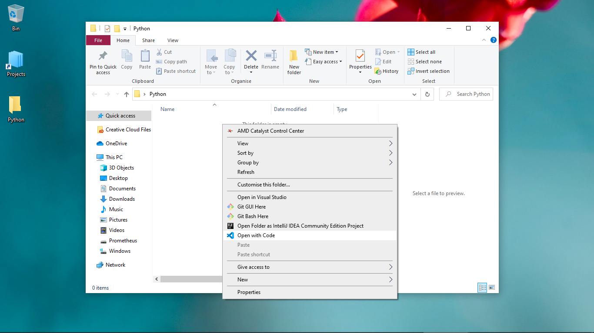

Python is a High-Level, General purpose, Interpreted programming language created by Guido van Rossum. It was released in 1991 and is named after the BBC Television Show 'Monty Python's Flying Circus'. The Python Software Foundaton, A non-profit organisation manages resources for Python development.
General purpose from Web Development, Shell Scripting, Data Science to Machine Learning; Python is suitable for different applications.
Open Source You can use it freely.
Easy To Read and Write Python has a simple Syntax that makes it easy read and write python code.It also makes it a great option for Beginners to Programming.
Popular Python is one of the most Popular Programming Languages its easy to get started in python , there's lots of resources and libraries. Python has a huge and friendly developer community
Platform Independent Python works on different platforms , all you need is the Python Interpreter.
Multi-paradigm Unlike other Programming Languages
Interface can be used as an Interface language. Code from low and faster programing languages like C can be imported into python program.
On windows you can install the latest version of Python from the Microsoft Store. On Linux or MacOS you can install the latest version of Python from the Package Manager(Homebrew on MacOS, on Linux, Linux Distributions use different Package Managers).
Alternatively, you can go to https://www.python.org and download a python installer for the OS you're using. Don't forget to check the 'add to path' checkbox when installing python using the python installer..
Open the Terminal or Command Prompt and run python --version to check if Python was installed correctly..
There are several ways you can write and run a python program ...
Create a Folder on your Desktop, it is where you'll be saving the python Programmes.
Open the Pyhon Shell (IDLE).IDLE is a basic editor and interpreter environment which comes with the installation of Python.
Ctrl/CMD + N or click on File and then New File to create a new python file ...
# My first python program
print("Hello World")
Write the Sample Code on the Text Editor...
Ctrl/CMD + S or click on File and then Save or Save As to save
the python file. Choose the Python folder on the Desktop as the directory
where to save the file. Name the file whatever you prefer with
.py as the file extention, click save...

click F5 or click Run and then Run Module to run the program ...
The Output will be shown on the Python Shell...

 Alternatively you can open VS Code and drag and drop the folder in VS Code.
Click the New File icon to create a new file ...
Name the file whatever you prefer with .py as the file extention, click Enter.
Write the Sample Code ,Ctrl/CMD + S to save changes...

Click Terminal , New Terminal to open a Terminal window.

To run a python Program on the Command-Line, you'll need to invoke the Python Interpreter on the program, for example : python program_name.py then Enter to run the program.
The output will be shown on the Terminal.

#comment: Comments in Python start with
the hash character (#) and extend to the end of the line. Comments are not
executed , they are mainly used to document the Code.
print(): The print function prints
anything passed into it to the screen.